AnyPortrait > 메뉴얼 > 보기 프리셋
보기 프리셋
1.3.0
애니메이션을 만들면서 객체들이 많아지면 효율적인 작업을 하기가 어렵습니다.
따라서 작업을 하는 동안 일부 객체들을 숨기거나 보이게 만들 필요가 있습니다.
반복적으로 이와 같은 작업을 한다면, 객체들의 출력 여부를 저장해두고 사용하면 편리할 것입니다.
이 페이지에서는 작업의 효율성을 높이는 보기 프리셋(Visibility Preset)에 대해서 설명합니다.
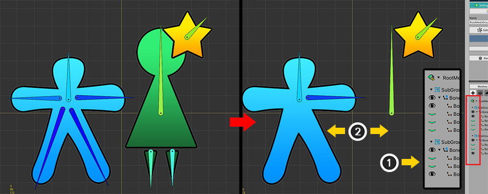
설명을 위한 간단한 캐릭터를 구성했습니다.
하나의 메시 그룹에 두개의 자식 메시 그룹을 만들었습니다.
자식 메시 그룹들은 각각 메시와 본들을 가지고 있습니다.
만약 필요하지 않은 객체들을 숨기고자 한다면,
(1) 오른쪽 Hierarchy 화면에서 검은색 또는 초록색 눈 아이콘을 눌러서 (2) 객체들을 임시로 숨길 수 있습니다.
이 방법은 쉽고 간편하지만, 반복적으로 하기에는 다소 귀찮습니다.
보기 프리셋을 이용해봅시다.
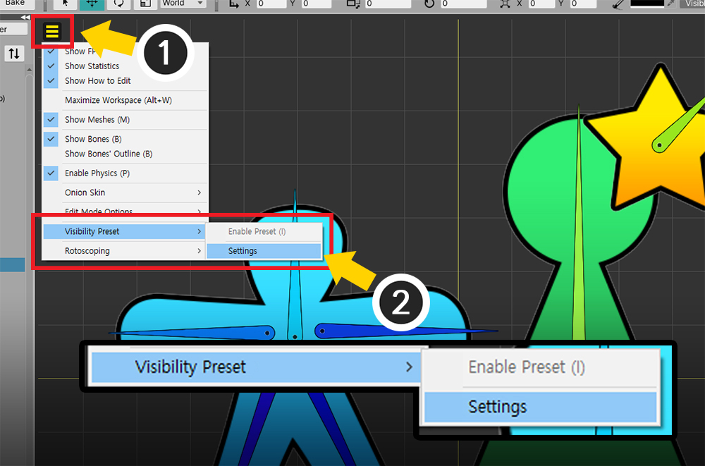
(1) 보기 메뉴를 엽니다.
(2) Visibility Preset > Settings을 선택합니다.
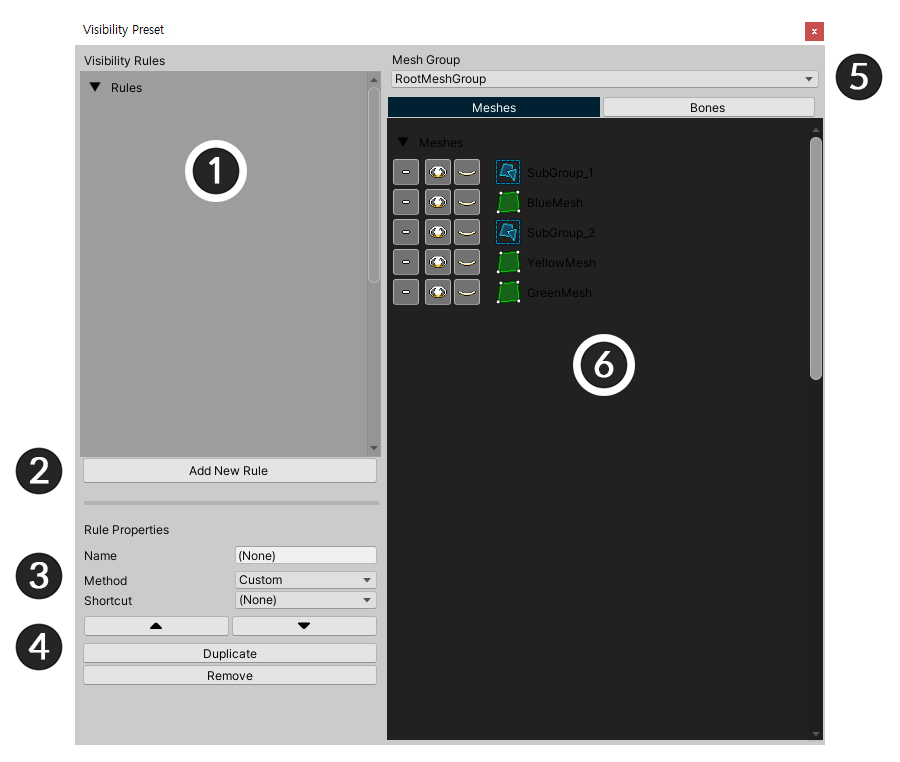
보기 프리셋의 설정 화면입니다.
1. 규칙 목록 : 보기 프리셋의 규칙들이 나타납니다.
2. Add New Rule : 새로운 규칙을 생성합니다.
3. 규칙 속성 : 선택한 규칙의 속성들입니다.
4. 규칙 순서, 복제, 삭제 : 목록에서의 규칙의 순서를 바꾸거나, 복제하거나 삭제할 수 있는 기능입니다.
5. 메시 그룹 : 대상이 되는 메시 그룹입니다.
6. 객체 목록 : Custom 규칙인 경우 객체들의 출력 여부를 결정하는 화면입니다.
새로운 규칙 만들기
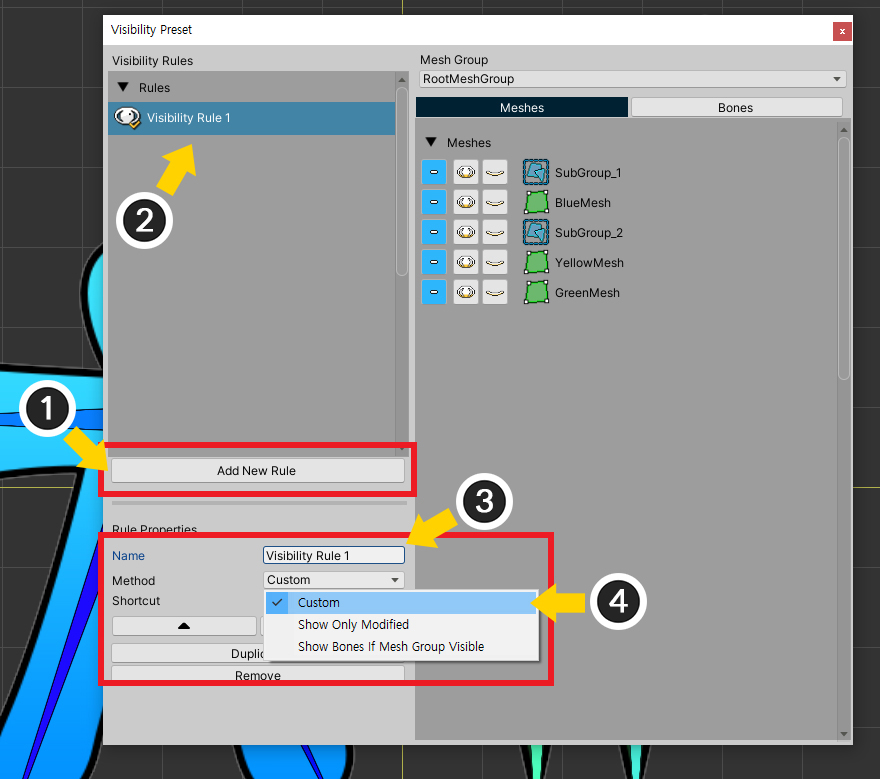
새로운 규칙을 추가해봅시다.
(1) Add New Rule 버튼을 누릅니다.
(2) 새로운 규칙이 생성되었습니다. 생성된 규칙을 선택합니다.
(3) 규칙의 이름을 정합니다.
(4) 규칙의 방식(Method)를 Custom으로 선택해봅시다.
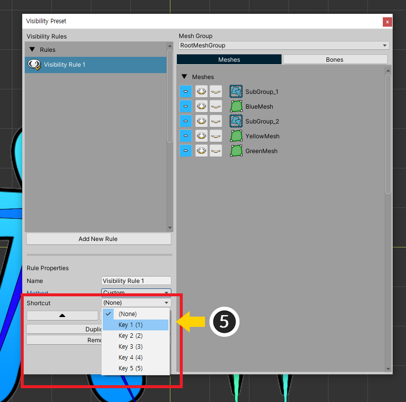
(5) 필요한 경우 단축키를 지정할 수 있습니다. 단축키는 총 5개( 숫자키 1~5 )중에서 선택할 수 있습니다.

"Custom" 방식의 규칙에서는 직접 객체들의 출력 여부를 설정할 수 있습니다.
(1) 대상이 되는 메시 그룹을 선택합니다.
(2) Meshes 탭을 선택하여 메시와 자식 메시 그룹의 출력 여부를 설정할 수 있습니다.
(3) 객체들의 출력 여부를 설정합니다.
(4) 객체가 모디파이어 등에 의해서 보여지는지 여부를 그대로 유지합니다.
(5) 객체가 보여지도록 설정합니다.
(6) 객체가 숨겨지도록 설정합니다.
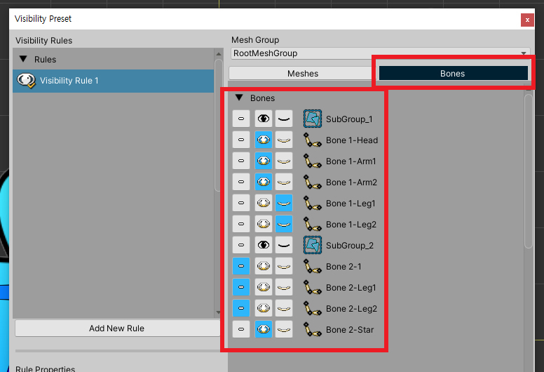
Bones 탭을 눌러서 본들의 출력 여부도 설정할 수 있습니다.
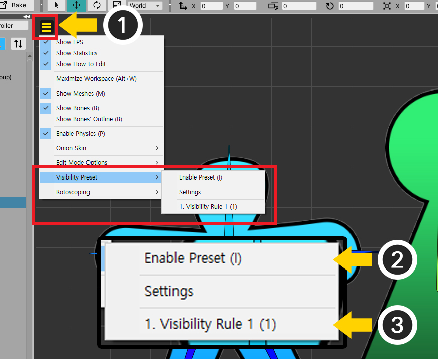
이제 이 보기 프리셋 규칙을 적용해봅시다.
(1) 보기 메뉴를 엽니다.
(2) Visibility Preset > Enable Preset (단축키 I )를 누르면 보기 프리셋이 활성화됩니다.
(3) 보기 메뉴에 생성된 규칙들이 나타납니다. 규칙을 변경할 수 있습니다.

작성한 보기 프리셋 규칙이 적용된 것을 볼 수 있습니다.
오른쪽 Hierarchy에서 "흰색 눈 아이콘"이 출력 여부가 바뀌는 것을 나타냅니다.
모디파이어의 대상만 보이게 만들기
편집 중인 대상들만 작업 공간에 보여지게 만들고, 그 외의 객체들을 일괄적으로 숨기고싶은 경우가 있습니다.
이러한 경우를 위한 특별한 규칙 방식을 이용해봅시다.
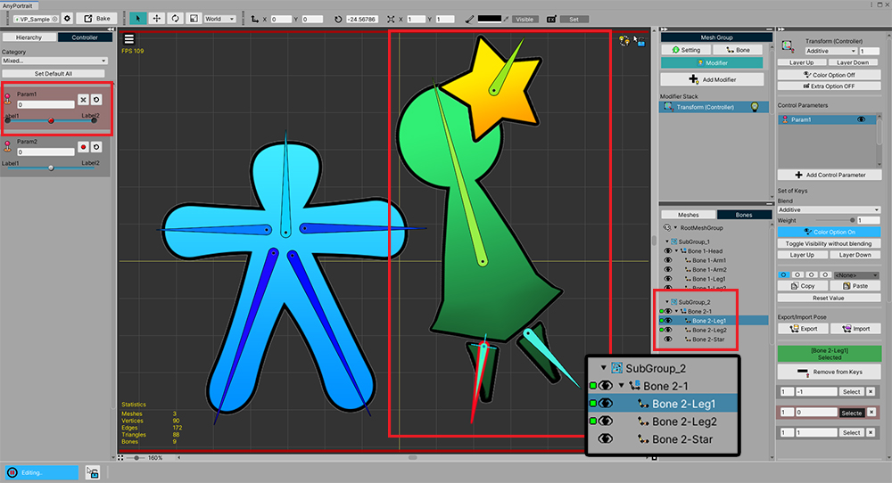
자식 메시 그룹 중 오른쪽 자식 그룹의 본들만 움직이도록 만든 화면입니다.
오른쪽의 본들만 모디파이어에 등록되었고, 그외의 객체들은 모디파이어에 등록되지 않은 상태입니다.
여기서 편집 중인 오른쪽 본들만 보이게 만들어봅시다.

보기 프리셋 설정 화면을 엽니다.
(1) Add New Rule 버튼을 눌러서 새 규칙을 만듭니다.
(2) 이름을 정하고, 이번엔 Method를 Show Only Modified로 설정합니다.
이 방식은 모디파이어에 따라 객체의 출력 여부가 결정되므로, 객체의 출력 여부를 일일이 설정하는 오른쪽 화면은 비활성화됩니다.
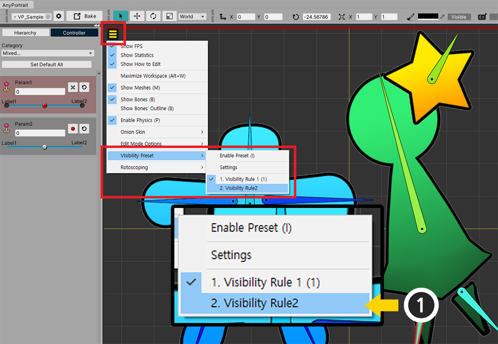
(1) 보기 메뉴를 열고 두번째 규칙을 선택합니다. 규칙을 선택하면 자동으로 보기 프리셋이 활성화됩니다.
(보기 프리셋이 활성화되지 않는다면 Enable Preset을 누릅니다.)
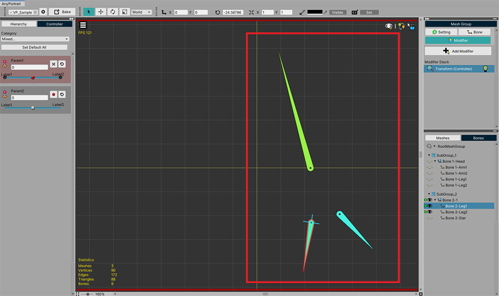
현재 모디파이어에서 편집 중인 본들만 화면에 나타나는 것을 볼 수 있습니다.
본의 출력 여부를 부모 메시 그룹과 동기화시키기
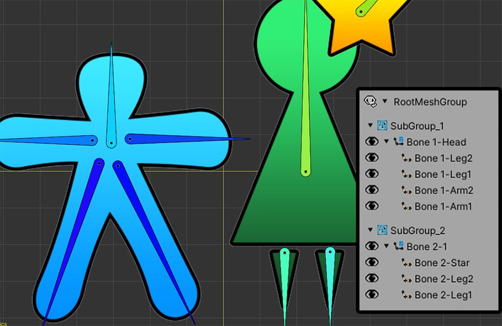
이 샘플의 좌우의 본들은 각각 서로 다른 자식 메시 그룹에 속해있습니다.

만약 위와 같이 모디파이어에 의해서 자식 메시 그룹이 안보여진다면, 메시들도 같이 렌더링되지 않습니다.
하지만 본들은 자식 메시 그룹의 출력 여부에 관계없이 항상 작업 공간에 나타납니다.
경우에 따라서는 이 본들이 화면에 보여질 필요가 없습니다.

보기 프리셋 설정 화면을 엽니다.
(1) Add New Rule 버튼을 눌러서 새 규칙을 만듭니다.
(2) 이름을 정하고, 이번엔 Method를 Show Bones If Mesh Group Visible로 설정합니다.

생성된 보기 프리셋 규칙을 적용해봅시다.
이제 자식 메시 그룹의 출력 여부에 따라서 본들도 보여지거나 숨겨집니다.